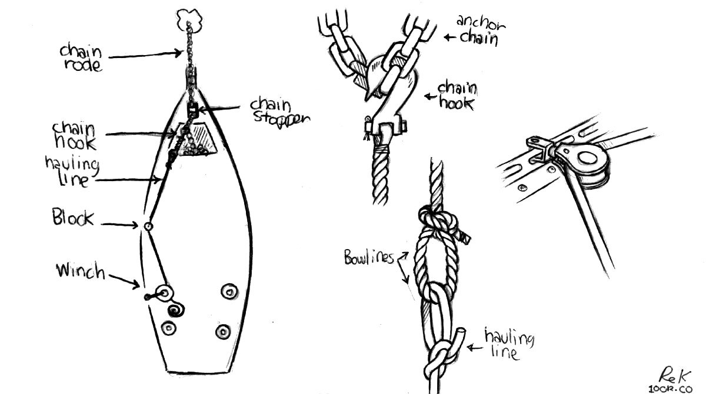
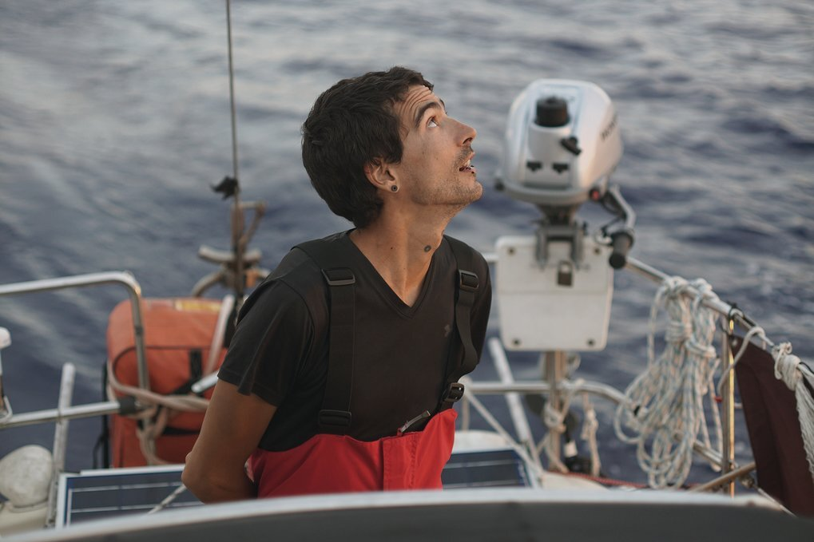

sailing
- Reefing
- Navigation
- No schedules
- Ground tackle
- No windlass
- Communication
- Night sailing
- Seasickness
- Knots
- Safety gear
- Offshore sailing
- Insurance

During long passages, our daytime sailing occupations include: cooking, cleaning, doing fixes on the boat and brainstorming on future projects. We don't have a tight schedule for day watches, we hand the wheel to the other as we get tired.
At sea, I learned how little a person needs, not how much. — Robin Graham
reefing
Reefing is a way of reducing the area of a sail by folding one edge of the canvas in on itself. The loose material is folded, and lashed down to the boom with sail ties. Carrying a smaller sail is a safety precaution, reducing heeling and de-powering the sail to improve safety and stability in rough weather.
When sailing, if you can do the same speed with less sail, do it. As soon as you think of reefing down, do it. Should we reduce sails? Yes, always yes.
Shaking out a reef is easier than putting one in in high winds.
Before we start our night shifts, we usually reef the mainsail. A smaller sail will slow us down, but our main concern is safety. The rule is that if the wind rises enough to have us question whether we should reef or not, we do it. Another important rule, is to never reef at night. Everything is harder to do in the dark. We have done it before, with success, but the issue is that it means waking up your partner, robbing them of their precious sleep. Can't we reef a sail alone? Yes, we could, but that would break another rule: never wander on deck in the dark alone, even with a tether. Therefore, we plan to always do our last manoeuvres of the day while there is still some light out, at the cost of speed.
navigation
Our navigation rests upon an old refurbished Standard Horizon chartplotter, and Navionics (installed onto all of our mobile devices). Navionics's depth maps, compass, GPS, waypoints, community edits, and more, are all the features that we could ever wish for to get from A to B, over water. We use it along with a separate AIS tool for traffic. Navionics lists positions in degrees minutes seconds, or DMS for short.
The chartplotter was a donation from our friends on SY Dakota (they upgraded theirs and gave us their old one in 2022). For now, it carries all of the maps for western canada.
We carry a sextant aboard, and both of us are learning to use it. Depending on GPS isn't ideal, and learning to navigate without it might save your life.
schedule
Sailing with a schedule is a recipe for disaster, too many things can happen on a boat and arriving on a precise date can be difficult. Making plans will make you do bad decisions, leaving in bad weather to make a meeting for instance, can be dangerous. Sail with the weather, not against it.
ground tackle
An offshore boat ought to house as many anchors as it can carry (Pino carries 2, we donated the third to a friend in 2022). The ideal anchor is one that can reset with ease if the wind changes direction.
Carrying multiple anchors is useful for kedging to get yourself out of a tricky spot (if you run aground), or to keep your boat off the dock in the event of contrary swell and wind. Kedging involves taking a dinghy out with a small anchor and line in the direction you want to move the boat. The anchor is dropped some distance away, and the person in the dinghy returns to the boat. Then, the sailor pulls the boat up to the anchor, a length of rope or so at a time. It is a slow, and difficult process but it works.
Some sailors argue that a bigger anchor is better, but the quality and shape of the anchor, as well as your scope makes all the difference. If you want to upsize, your bow roller may need replacing, and in the event of windlass breakage, heaving it up by hand could be next to impossible.
We carry many lengths of 3-strand nylon rode, to use for kedging, or for tying up stern lines when med-mooring in ports, or to carry and tie to a point ashore to keep from swinging in busy anchorages.
Read about anchoring etiquette.
communication

As a sailor, you must offer help to a boat in trouble. Radio communication is key, specific channels are used in every country for emergencies or information exchange. Every morning, sailors will tune in to a specific channel and listen to a morning net, a public radio exchange in which the weather and local events are announced, as well as boats seeking crew, or items that need to be sold or found. When the weather is foul, the local channels are very busy.
There is an unspoken understanding between long-distance sailors, an exchange of looks when foul weather is amidst. Every member of the sailing community knows the difficulties of life at sea, and is ready to lend a hand. We refer to each other by boat name, and like bird-watchers, we can identify rare breeds by sight. When transiting through world routes, we meet the same boats often, thus strengthening the connection. Talking to other sailors, and exchanging information is extremely valuable. You will make friendships for life.
On our 5-year cruise around the Pacific Ocean, we used a satellite phone.
radio

Onboard Pino we carry a fixed marine VHF radio, a handheld VHF and two transceiver Walkie Talkie two-way radios. VHF/UHF radio waves travel in straight lines (line-of-sight) generally cannot travel beyond the horizon. VHF (very high frequency) is the designation for the range of radio frequencies from 30 to 300 megahertz (MHz)
A marine VHF radio is an important and reliable for bidirectional voice communication both for ship-to-ship and ship-to-shore. In Canada, a Restricted Radiotelephone Operator Permit is required to transmit, it is unlawful to operate a ship station that is not licensed. The handheld marine VHF has the same functionalities as the fixed version, but is equipped with DSC(Digital Select Calling).
We sometimes use the two transceiver two-way radios to talk to each other from shore-to-shore, an Amateur Radio License is required to broadcast with this type of radio in Canada. A license ensures that new users are aware of the existing regulations and don't broadcast on reserved frequencies.
anchoring
When anchoring, use a scope of 1:3 when using all chain, or 1:4 if possible. More scope means less vertical strain on the anchor, and less chance of unsetting it. The longer scope is not always possible in tighter anchorages, which is why having a considerable length of chain will increase horizontal tension. A minimum of 15 m (50 ft) chain linked with at least 90 m (300 ft) of nylon rode is recommended. A nylon rode with a short length of chain requires a bigger scope of 1:7, although it is difficult to find places to anchor that will allow for that much swing room, it depends on where you sail. Our home waters in the Salish Sea rarely allow for that kind of scope, especially during peak summer sailing season.
Anchoring etiquette. Don't anchor too close to your neighbor, especially if the neighboring boat is a motor boat, or much larger yacht. Boats orbit their anchors differently, especially lighter vessels. A lighter boat, with an all-nylon rode might "dance" around its anchor more and require more space.
When coming to anchor in a bay to find other boats already occupying it, observe how they are set up, if they are on nylon rode or chain, and how far apart they are spaced. If unsure about the set up of a neighboring boat, ask, the last thing you want is to set your anchor too close to theirs. Some boats may have a stern anchor, which means they won't swing, and so if you are near, you must do the same or you will swing into them. Anchor behind other boats, or well in front if there is enough space, and try to stagger your spacing to one side or the other to avoid being directly off someone’s bow.
Water depth. We prefer to anchor in waters no deeper than 11 m, to make it easier to retrieve our anchor. We have found plenty of anchorages in the South Pacific in that depth range. Also, in many places in French Polynesia, The Marshall Islands, Fiji and Tonga, they recommend the use of mooring buoys to keep from damaging coral reefs on the seafloor.
When sailing in Northern BC(see western canada) and us se alaska we ended up having to anchor in deeper waters, sometimes in 23 m(at high water). The tides in this part of the world can reach as high as 4.8-6.4 m(16-21 ft). We held fine in all of the anchorages we visited with 1:3 scope with 30 m of chain and an oversized anchor-also, our boat is light. In heavy weather, we generally aim for 1:4. There isn't just one combination of rode and anchor that can keep your boat safe, what works depends on the size/weight of the boat, the size/type of anchor, and the kind of sea floor(mud, sand, rock etc).
Anchor retrieval without a windlass. When in deeper waters, we often had to use a chain hook led back to a cockpit winch(see no windlass) to pull our chain up. To haul up long stretches of nylon rode in deep waters, we would tie a rope loop to the nylon rode using a prusik knot(a friction knot that tightens under load), tie a bowline to the loop and lead that back to a cockpit winch. This system worked well enough for us, but hauling up the anchor this way is not a fast process, it only requires a good cockpit winch.
Sea floor debris. Sometimes, when anchoring, you may find it difficult to pull up the anchor from the sea floor. The anchor may have snagged some debris. In places where others have reported that the sea floor has debris, tie a float to the head of your anchor so that you haul it up with it in case it gets stuck. The line to the float needs to accomodate the water depth. We used this system while anchored in Frances Bay, a place where the sea floor is known to have old logging cables.
Some anchorages are full of kelp, it may be more effort to retrieve an anchor but it is not impossible. Kelp is very thick, it is shocking how difficult it is to rip apart with your hands. If anchoring in kelp-prone areas, keep a good serrated knife at hand.
Read about our anchoring setup.
no windlass
We haul the anchor up by hand most times, but when anchored in thick mud, or deeper waters, we like to lead a line back to the cockpit, and to use the above method to haul up the anchor rode and anchor. It is easy to get hurt when there is a lot of weight on the anchor, due to water depth or bottom consistency. We have used this method often when anchoring in Northern British Columbia and Us Se Alaska. The deepest we've anchored so far is 22 m (75 ft), with about 68 m (225 ft) of rode out(30 m/100 ft or chain, 38 m/125 ft of rope rode).
Note that this is a method that works for us, we don't expect others to abandon their electric/manual windlasses in favor of this. It is a different sort of complexity than a windlass, but can be a good option for those who need an extra kick when hauling in the line by hand. This technique is ideal for smaller, lighter boats. We use a Barient 25 winch(not self-tailing) aboard, a quality, well-sized cockpit winch helps to haul in the anchor rode.
Using this method, can only heave up a short length of chain at a time. When the chain hook is near the block amidships, we engage the chain stopper, loosen the line at the winch, move the chain hook forward, pull some more, and repeat.

If we have a lot of rope rode out in the water, we use a rope loop(made using a double fisherman's knot, see above) and tie it to the 3-strand nylon rode using a prusik knot. (Note that our rope loops are a little long, making shorter loops means that it would be possible to haul in more rope rode).
Evidently, it is also possible to lead the 3-strand line itself back to a cockpit winch and to haul it in continuously, accumulating the rode in the cockpit. The problem with this technique though is that the angle from the bow roller to the cockpit winch will likely not be very good, the rode may drag on cabin top or worse, the windows. It's not possible to run the line through a block because the ends aren't free(we can't pass the entire rope rode though it), it's not possible to run them through the block to get a better angle, unless somehow it's possible to open the block and to run the line through.

Like with the chain hauling method, our hauling line attaches to the rope loop forward of the boat, and is led back to a cockpit winch.
In the drawing below, we use a bowline to tie the hauling line to the rope loop, but we now have the chain hook secured to the end of the hauling line and put the chain hook through the loop instead..

When the chain hook arrives amidship at the block, we tie another rope loop using a prusik knot again, we tie it forward on the line to release pressure(this is like engaging the chain stopper). We secure the tension-relieving prusik knot loop on a cleat, then the prusik knot on the hauling line is relieved of tension and it is possible to loosen it to slide it forward on the 3-strand line back to the bow to begin another round of hauling. Prusik knots bind under pressure, but are very easy to undo when there is no weight on the line. When the hauling line is back under tension, we unhook the prusik knot loop from around the cleat, and take it off the rope rode altogether until needed again.
Hauling an anchor this way is not a very fast process, but it works. We tested this method in difficult conditions when we needed to leave Ratz Harbor quickly on June 8th 2024, after the weather had turned sour. Note that it is very challenging to do in big weather, everything is under a lot of pressure, you must be careful. It is ok to do under normal conditions, again, it just takes time.
Self-tailing winch. We don't have self-tailing winches in the cockpit, having one would make it easier to haul up the anchor. Devine is at the winch and can't hold the line effectively while winching, especially if there is a lot of rope rode out, so the second person goes to the cockpit to hold the bitter end, applying pressure to keep the line tight around the winch drum. Once the chain hook reaches the block amidship, Rek goes to the bow to engage the chain stopper(if hauling chain) or to tie a prusik knot to the rope rode and securing the line to a cleat.
Even if you have an electric or manual windlass aboard, consider carrying extra blocks, a chain hook and rope loops as a safety backup. Your cockpit winches are very powerful, you can haul an anchor with one no problem. Motor boats ought to consider installing a winch somewhere aboard in case of windlass failure, a winch is also useful to pull in a line when stern-tying. Learn how to do a prusik too, practice and master it before you need to do it under pressure.

One major downside of hauling the anchor up this way is that it makes a big mess on deck, as we drag a muddy chain over it. If the chain has some rust on it, this too will leave a mark. We have a long streak from bow to amidship that does not wash away easily, some more abrasive products would help(we have some products aboard), but we prefer not to use harsh products while in pristine waters.
night sailing
We used to be afraid of sailing at night, but now we look forward to it. It is the perfect time to think, to read, to listen to podcasts or music. It is easier to see ships in the dark than in the day, their locations are marked with lights.
On clear, moonless nights, we see a beautiful tapestry of lights overhead, a show that is becoming less observable in cities because of light pollution. Then, depending on where we are in the world, there is bio-luminescence in the water.
We prefer reefing the mainsail down at night, a smaller sail will slow us down, but our main concern is safety.
Whether night or day, we always wear tethers that we clip to a strong point in the cockpit. We have a pair of jacklines, flat nylon webbing that run the length of the deck that we clip onto if we need to go outside of the cockpit. At night, we never go out of the cockpit, even with a tether. A short tether is better than a long one. With a long tether you run the risk of falling too far overboard, making it difficult for the crew aboard to retrieve you.
Since we started sailing, we have stuck to the same pattern for night shifts. One sleeps between 1900 and 2100, then sails between 2100 and 2400, then goes back to sleep from 2400 until 0300, and then goes back to the tiller between 0300 and 0600. 3 hours on, and 3 hours off. Some sailors prefer longer shifts, doing 4-5 hours at a time. We prefer shorter shifts, because we get tired easy, and 3 hours, when tired, feels unending. If ever we need more sleep, we take short naps in the day.
seasickness
Here's a few of our tricks against seasickness.
- Don't drink alcohol or coffee the day before leaving.
- Eat before you're hungry.
- Rest before you're tired.
- Don't let yourself get cold.
- If everything else fails, take the helm.
knots
Terminology
Bend. A knot used to join two ropes.
Binding knot. A knot that constricts a line/object, with the ends joined or tucked under the turns of a knot.
Hitch. A knot that joins a rope to an object (ring, rail, post etc).
Friction hitch. A knot that binds one rope to another and that allows for re-positioning.
Jamming. A knot that jams(difficult to untie) after use.
Non-jamming. A knot that tightens when under load, but that doesn't jam.
Loop knot. A knot used to create a closed circle.
Standing end. The part of a rope that is not made into a knot.
Working end. The part of a rope that is made into a knot.
Knots to learn to tie behind your back:

- Name: Square knot (or reef knot)
- Type: Binding(friction)
- Function: Secures a line around an object. Not suitable with lines of different diameters, not as secure as a bend(unless additional knots are used).
- Marine use: Used to secure a reef in a sail.

- Name: Sheet Bend
- Type: Bend
- Function: Joins lines of different diameters, can work loose when there is no load (for extra strength make a double sheet bend)
- Marine use: Used to extend a line, to make a tow rope, etc.
{kind=link}
- Name: Round turn and two half-hitches
- Type: Hitch
- Function: Secures a line to a fixed object
- Marine use: Used to tie a dockline around a bull rail, or post.
- Name: Bowline
- Type: Loop
- Function: Makes a fixed loop at the end of a line. This is a non-jamming knot. With certain materials, can work its way loose when there is no load.
- Marine use: Used to secure the working end of a sheet to the clew of a headsail.

- Name: Double fisherman's knot
- Type: Bend
- Function: Makes a secure closed loop. This knot is made up of 2 knots that slide together when tightened, to form the final knot (kids use this knot to make simple adjustable bracelets).
- Marine use: Used to make a closed loop to use with a prusik knot to climb the mast.

- Name: Rolling hitch
- Type: Hitch
- Function: Used to tie one rope to another, or to a pole, for lengthwise pull along an object rather than for a pull at right angles (works for a single direction of pull). It is effective for moderate loads, won't hold as well with modern slippery synthetic ropes (use gripping sailor's hitch instead).
- Marine use: Used to pull a line lengthwise, say to take pressure off a sheet in the event of a jam.

- Name: Gripping sailor's hitch
- Type: Hitch
- Function: Used to tie a rope to an object, or to another rope. This knot doesn't jam, and won't slip when pulled lengthwise along the object. It has more grip than a rolling hitch, even on tapered objects and performs well with synthetic ropes.
- Marine use: Used to pull a line lengthwise with a heavy load at the end, like an anchor rode.

- Name: Prusik knot
- Type: Hitch, binding(friction).
- Function: Used to attach a loop of cord around a rope, it locks onto the rope when under load, but slips up and down well when the load is released.
- Marine use: Used instead of ascenders to climb a mast, doesn't damage the rope it is secured to when sliding.
safety gear

They who let the sea lull them into a sense of security is in very grave danger. — Hammond Ines
Things can happen, even on a calm ocean, so it is necessary to be alert and to not underestimate the water's strength and unpredictability. Never be complacent, and don't trust the sea.
Safety gear with auto-inflating systems need to be inspected often, and you must carry spares. Safety gear will last you many years if serviced regularly.
Pyrotechnic signaling devices (including aerial flares and hand held signals) expire 42 months after the date of manufacture in accordance with the Coast Guard requirements. Typically, this means that you must replace your flares every three boating seasons. Aerial flares cost $75 per pack of 6 (in Canada), for a boat our size (10 m) we need to have 12 aboard.
Life jackets. Wear a life jacket (with a sailing harness) and tether (especially when night sailing). The jackets need to be serviced every 3 years, so that the auto-inflating canisters can be tested, and replaced. Replacement cartridges for auto-inflating PFDs cost about $35 CAD. If planning to travel for many years out of the country, carry replacement cartridges onboard, because other countries may not carry the ones required by your model and that replacements can't be shipped by air since they're pressurized.
Life jackets that are not auto-inflating are fine, but must have a sailing harness to which you can clip a short tether. If the tether is short enough, you won't fall overboard and won't require extra flotation. Floating life jackets that are non-inflating are bulky, and may make it difficult, or uncomfortable to sail in. Wearing a short tether that keeps you to the boat, and prevents you from falling too far overboard is your best security. We recommend a short tether with two clips, so you can clip to another point on the boat while always being clipped on elsewhere.
life rafts. Re-packing a liferaft is very expensive, and varies depending on the model, and your location in the world.
Jacklines. Run jacklines along the deck, from the bow to stern cleats, and keep them within the standing rigging. Make sure the jacklines are flat, and brightly colorful so as to be visible at night. Rope jacklines can trip you up. An even better option for jacklines, is to keep them running as close to the center of the boat as possible, so that there is no chance of falling overboard when attached. Jacklines have to be made from a strong, UV resistant material, you can buy them, but we had ours made.
first aid kit
Basic First-aid kit:
Clearly mark the first-aid kit with a red cross, and make sure everyone aboards knows where it is. Keep a list inside of the items you use, and be sure to top off the kit every year or so. Also, see ditch bag.
- Sterile gauze pads (dressings) in small and large squares to place over wounds
- Medical tape
- Roller and triangular bandages to hold dressings in place or to make an arm sling
- Adhesive bandages in assorted sizes
- Scissors
- Tweezers
- Safety pins
- Instant ice packs
- Disposable non-latex gloves(such as surgical or examination gloves)
- Flashlight(with extra batteries in a separate bag)
- Antiseptic wipes or soap
- Pencil (and sharpie) and pad
- Emergency blanket
- Eye patches
- Thermometer
- A first aid manual
Basic Medicine kit:
Always read about a medicine before using it. If administering medicine to another person, ask about their allergies, and past medical history, last oral intake etc. Some medicines can cause severe allergic reactions, or may interact with other medicine.
Never administer anything to anyone without their consent.
- Ibuprofen (Oral. Minor pain, and fever reducer, e.g., toothache, menstruation cramps, headache)
- Aspirin (Oral. Pain, fever, inflammation reducer, e.g., treat/prevent heart attacks, strokes, chest pain)
- Antihistamines (allergy relief)
- Seasickness meds (scopolamine patches, dimenhydrinate(dramamine) etc)
- Ear drops
- Eye wash
- Insect repellant (mosquitoes can carry malaria, or dengue)
- Hand sanitizer
- Topical anesthetic
- Zithromycin (Oral. Treatment of bacterial infections, e.g., traveler's diarrhea, gastrointestinal infections etc)
- Oxycodone/Acetaminophen (Oral. Severe pain relief, fever reducer)
- Sunscreen (SPF 30)
- Aloe vera gel with lidocaine (for burn relief)
- Bacitracin/Polysporin/Neosporine (Topical ointment. Prevents infection. For minor scrapes, cuts, and burns)
- Hydrogen peroxide
- Imodium (anti-diarrhea)
Advanced Medicine kit add-ons:
- Hot water bottle (for hypothermia)
- Staple gun (for wounds)
- Epinephrine (vials, or Allerject/AUVI-Q. Avoid EpiPens, they are grifters)
- Tourniquet
- Multitool
- Compression bandage
- Reinforced sterile skin closures
- CPR pocket mask
- Povidone surgical scrubs (iodine)
- Sterile sutures thread with needle
- Emergency dental kit
ditch bag

Every boat should have a ditch bag, that is, a bag filled with emergency supplies in case the boat needs to be abandoned. Remember though, you should only ever have to step UP into a liferaft. Don't be too quick to abandon your boat, boarding a liferaft ought to be a last resort. In a panic, sailors board their liferafts too soon, with their boat found later, still afloat.
The ditch bag should have:
- A handheld vhf
- Spare batteries
- Noise-producing device (whistle, horn)
- Flashlight
- Water rations (4L/week for 2 ppl)
- Calorie-dense food rations (ex: 280-400 cal energy bars)
- Charts
- A good knife
- Multitool
- Sextant
- Sunscreen (SPF 30)
- Lighter & 1 pack of waterproof matches
- first aid kit
- Fish line & fish hooks
- Mirror
- Compass
- Duct tape
- Flare gun
- Emergency blanket
- Tarp, for sun protection & as vapor barrier for a hypothermia wrap(see medical).
- PLB(personal locator beacon), or EPIRB
offshore
If you want to go offshore, there is a long list of safety items, tools and spares that you need to have. Read our offshore checklist. Make sure your boat is outfitted with all that is listed, and that your boat has all of the recommended safety features before leaving.
Here's a few quick tips for offshore sailing.
- Anything on deck is sacrificial.
- In heavy winds, heave-to, don't run.
- When tired, heave-to, don't push too hard.
- Learn how to self-steer without external devices.
- Buy a good set of oil skins.
- In the cold, wear wool, not synthetics.
- Store main anchor below decks.
- Secure all floorboards and doors.
Before every long passage, we do a thorough check of all equipment on board, this means looking at the stitching on the sails, testing the electronics, checking the running and standing rigging etc. For the first time, have someone with you to help, you can also hire professionals to inspect your boat. For example, we hired a rigger to inspect Pino's standing rigging when we were planning to go offshore for the first time. We asked him a lot of questions, watched how he did things etc.
insurance
When insuring your boat, you can insure it fully, or you can get liability insurance.
Full insurance. If you hit a rock and damage your keel, full insurance will cover the work, and even the tow to the nearest facility, it will also cover the cost of salvaging it if the vessel sinks. The insurer may not cover sailing in certain areas, especially if outside of protected waters.
Getting full insurance for offshore sailing is possible but expensive, and they have strict requirements. For instance, we met many sailors in Tonga who had a 'leave by date' to sail to New Zealand. This date marked the official start of cyclone season. If they left past this date and something happened to their boat, then their insurance would not have covered the costs. This practice is unfortunate, and downright dangerous, but it is how insurers protect themselves.
Liability insurance. This type of insurance is required if you want to dock anywhere, its purpose is to cover costs if the boat damages facilities or other boats. Even when cruising the world, most places will require it, but it is often better (and cheaper) to purchase it locally—we did this in New Zealand, and in Mexico.
In both cases, your boat will need a survey to get insurance. A full out-of-water survey is required for full insurance. Some companies in Canada ask that boats older than 12 years old be surveyed every 5 years, but wooden boats need a survey every 3 years. An in-water survey may be enough for liability, but it depends on the age of the boat.
Survey
What happens when a surveyor comes to your boat? A surveyor for insurance will look at different things than one for the purchase of a boat, what they care about most is if the vessel is seaworthy. They will check thruhulls, shaft seals, keel bolts, electrical connections, battery setup, check the interior wood for water stains (indicative of water seepage, rot), engine mounts, chain plates, bilge pumps, etc.
Out of water. During an out of water survey, the surveyor will sound the hull with a hammer (tap test) to check for water instruction in the core. They will check the keel, hull for damage or osmosis. There can be surface osmosis (under paint, not severe), or hull osmosis (more severe). They will check your rudder, its alignment, and whether it wobbles or not. They'll also look at thru-hulls.
Empty the boat.If living aboard, you'll have to clear all lockers and surfaces so that they can look through every compartment without having to move anything to get to it (common courtesy). Many surveyors don't want to survey liveaboard boats because people don't want to do this, which makes it very difficult for them to do their work.
Thoughts
We sailed offshore without insurance from 2016 to 2021, because we did not have enough sailing experience and no one wanted to insure us. It was risky, but we sailed with caution. Keeping an eye on the weather, studying charts carefully, picking good anchorages, and having a good rode and anchor was our best possible insurance, but there are dangers that are beyond anyone's control, dangers that even the most skilled sailor cannot avoid, e.g., a shipping container adrift, dead heads at night, whales, etc.
A downside to insurance companies is that they are slowly pricing out small yacht owners. A machinist may not want to help a non-insured sailor with a small fix, because they can charge more to those with it. Small scale projects are not big money makers, and they are more likely to refuse them.